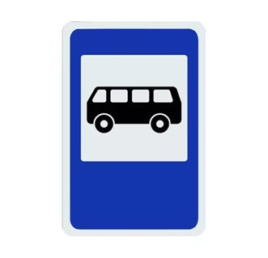
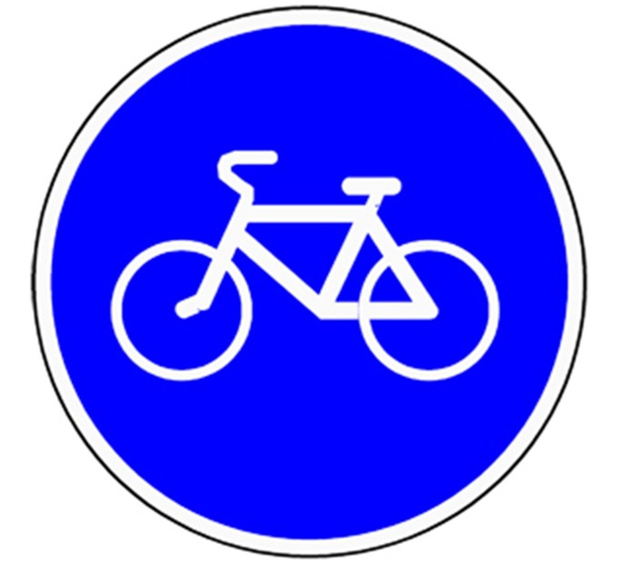

Основные правила поведения в общественном траспорте
Основные правила поведения в автобусе:
- ждать автобус только на остановках, которые обозначены специальными знаками (рисунок 1),
- входить или выходить из транспорта можно только при его полной остановке,
- в транспорте нельзя придерживать двери руками, а также высовываться наружу из дверей и окон,
- в транспорте нельзя шуметь,
- при аварии использовать для выхода двери или вентиляционные люки.

Рисунок 1 - Внешний вид знака "Автобусная остановка"
Основные правила поведения в автомобиле:
- не садиться на переднее сиденье детям до 12 лет,
- при посадке в автомобиль пристегнуться ремнём безопасности,
- во время поездки нельзя отвлекать водителя
- при окончании поездки лучше выходить со стороны, где нет машин.
Основные правила поведения на железнодорожном транспорте:
- при приближении поезда не выходить за предупреждающую полосу на платформе до полной остановки поезда,
- посадку (высадку) осуществлять только, когда поезд остановился,
- занимать места согласно билетам,
- нельзя срывать стоп-кран поезда,
- ни в коем случае не кататься на крышах поезда,
- прыгать с поезда на ходу и с платформы на железнодорожные пути.
Основные правила поведения при езде на велосипеде:
- кататься можно в парке, лесу, во дворе, а также в местах, обозначенных знаком "Велосипедная дорожка" (рисунок 2),
- детям нельзя кататься по проезжей части дороги. Кататься по проезжей части можно только с 14 лет,
- не кататься на велосипеде вдвоём,
- всегда следить за дорогой,
- придерживать руль руками во время езды.

Рисунок 2 - Внешний вид знака "Велосипедная дорожка"